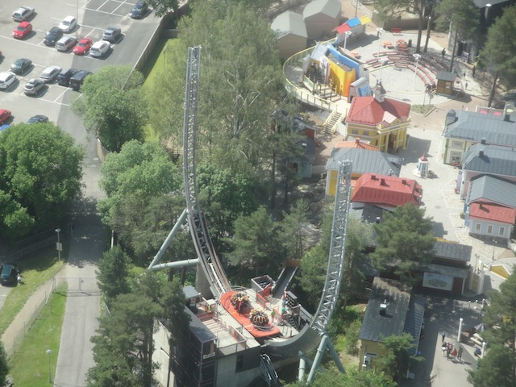
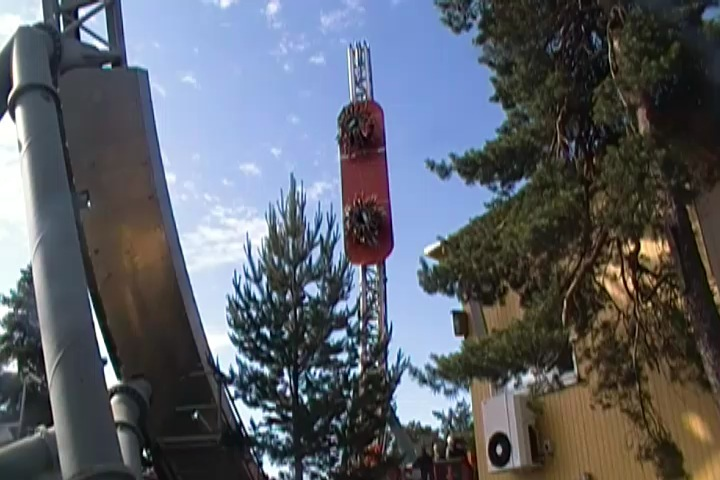

| |

Halfpipe Review

For today's review, we'll be going back in time to my visit to Särkänniemi where we'll be reviewing Halfpipe. Now Halfpipe was an Intamin Half Pipe (hence, the name. Way to mention that, Captain Obvious), which a few people consider to be a flat ride, and not a credit. Well here, we count it as a credit. Now Halfpipe is one of the bigger half pipes (Hell, Intamin officially calls the small ones Surfriders. But I still call those Halfpipes). But that doesn't matter as it was freaking awesome. After you got in the seats, you were off. You started off slowly, not going very high nor very fast. But soon, you were flying up and down the track, gaining lots and lots of speed. And not only that, but this ride spun. Honestly, I prefer the small ones, as while this one was bigger, and you noticed being vertical, you didn't get the insane spinning and the yank you get from the small ones. Eventually, the ride ended, and while it's a tragedy, it was still a very fun ride. It's a shame that Särkänniemi got rid of Halfpipe. These rides are actually kind of rare, and with the one here gone, there aren't many left.
7/10
Location: Särkänniemi
Opened: 2003
Died: 2019
Built by: Intamin
Last Ridden: June 27, 2014
Halfpipe Photos



Home
|